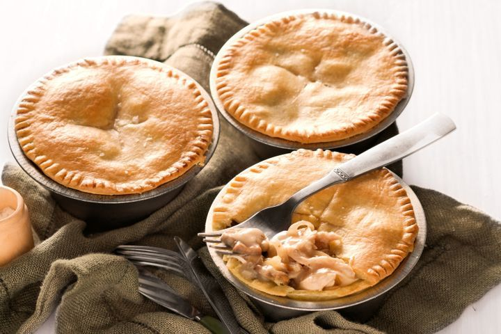

Home
Chicken and Mushroom Pie

Image by Andrew Young
Recipe by Kirrily La Rosa
Description
Another one of my favorite dishes. These creamy chicken and mushroom pies only have a few ingredients. They also do not take too much time to make since they use cream of mushroom soup as part of the filling. They also do not require too much time to make compared to the other recipes which can take several hours.
Ingredients
- 1 tablespoon of olive oil
- 1 brown onion, thinly sliced
- 150 grams of mushrooms
- 420 grams can of Campbell's Condensed Cream of Mushroom soup
- 3 cups shredded cooked chicken
- 3 sheets of frozen shortcrust pastry recently thawed
- 1 tablespoon of milk
Steps
- Heat oil in a frying pan over medium/high heat.
- Add onion.
- Cook and stir for 5 minutes. Then add mushrooms and cook another 5 minutes.
- Add soup and 1/4 cup of cold water, cook for 3 minutes.
- Turn off the heat and add chicken and season with pepper. Transfer to a bowl to cool off.
- Preheat oven to 200C (392F).
- Cut two sheets of pastry in half diagonally.
- Line pie tins with pastry and trim edges.
- Spoon chicken filling into the tins.
- Cut remaining pastry into 4 squares.
- Place 1 pastry over the pie tins.
- Trim excess pastry and trim edges with a fork.
- Brush with milk and cut cross section in the top.
- Bake for 40 minutes.